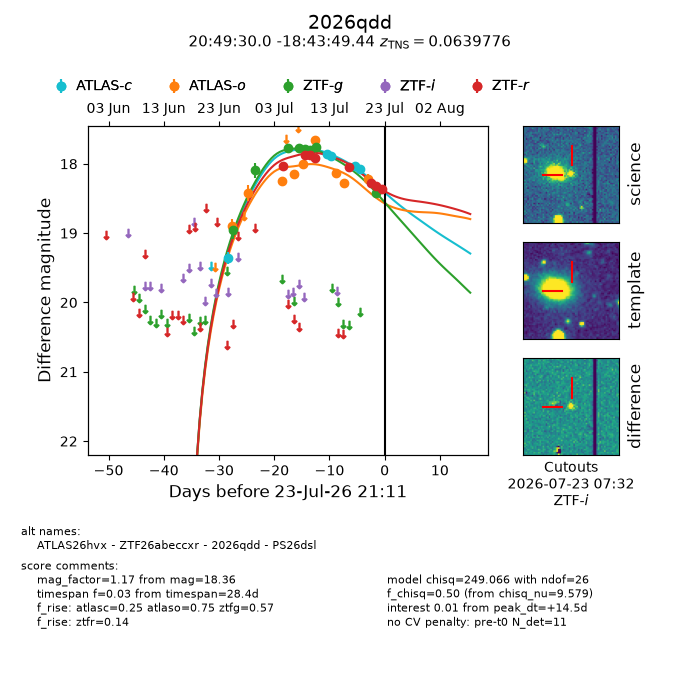
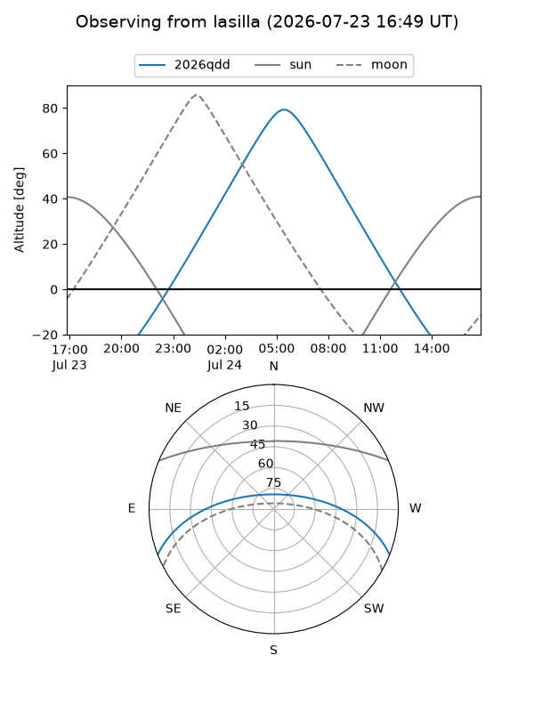
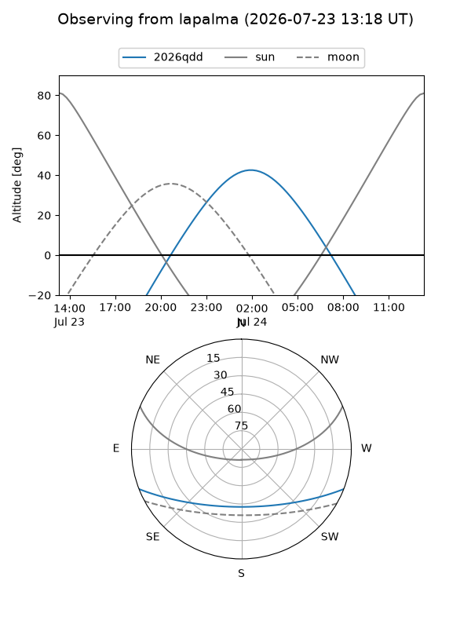
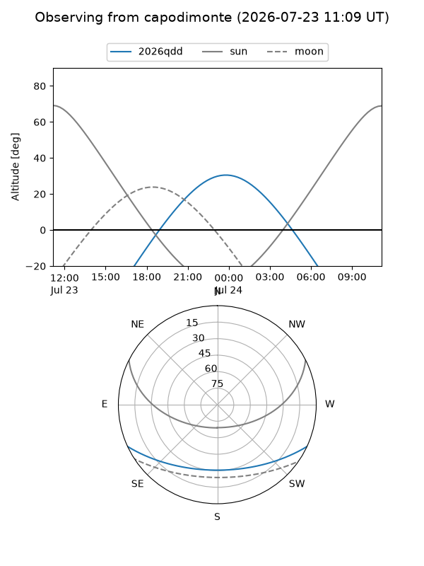
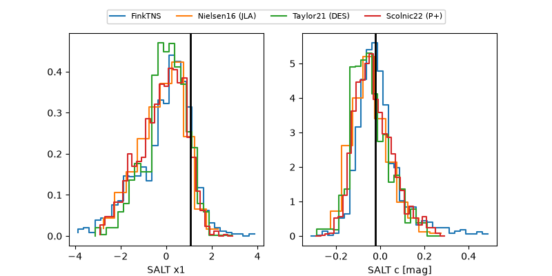

2026qdd
Target 2026qdd at 2026-07-23 21:14
Aliases and brokers:
FINK-ZTF: ztf.fink-portal.org/ZTF26abeccxr
Lasair-ZTF: lasair-ztf.lsst.ac.uk/objects/ZTF26abeccxr
ALeRCE-ZTF: alerce.online/object/ZTF26abeccxr
YSE-PZ: ziggy.ucolick.org/yse/transient_detail/2026qdd
TNS name: wis-tns.org/object/2026qdd
Direct TNS query: direct search
alt names
ZTF26abeccxr (ztf,fink_ztf)
2026qdd (tns,yse)
ATLAS26hvx (atlas)
PS26dsl (panstarrs)
Coordinates:
equatorial (ra, dec) = 312.3749,-18.73040
equatorial (HMS+DMS) = 20:49:29.98,-18:43:49.44
galactic (l, b) = (27.8671,-34.17084)
Flags:
TNS type: SN Ia
TNS redshift: 0.0640
peak dt: +14.5
Photometry:
last atlasc=18.07, atlaso=18.22, ztfg=18.42, ztfr=18.36
5 atlasc, 9 atlaso, 8 ztfg, 8 ztfr detections
Lightcurve

Visibility



Additional plots
